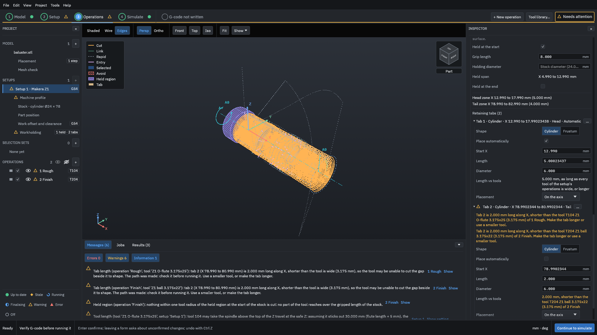
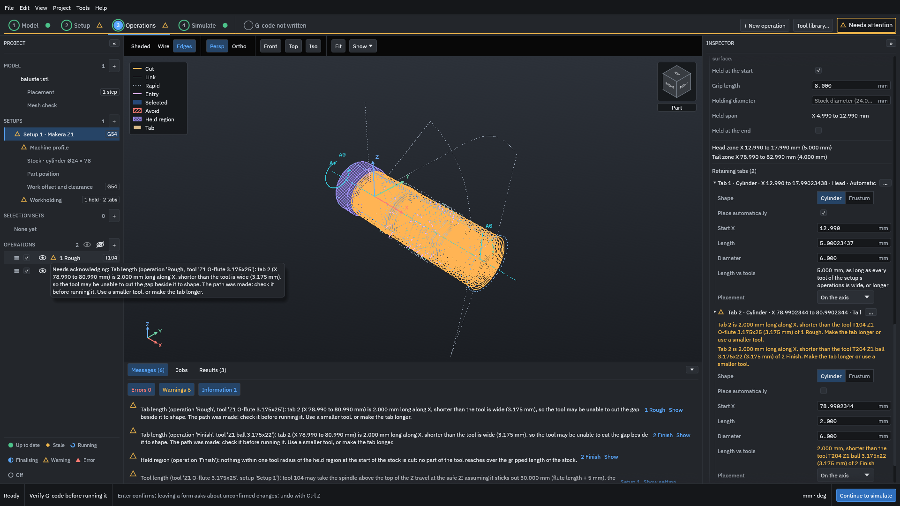

Tabs and held regions
This example gives the tutorial’s baluster a tab at each end, lets the program place them, and then makes the two mistakes that tabs most often meet: a tab shorter than the tool is wide, and a tab with no room left for it. You see what the program says each time and what to change.
Warning
Tabs and held regions change where the tool may go, but the program does not know your chuck jaws, your tailstock or how you will cut the tabs away. A tab that is too thin can break while the part is being cut. Check every path near a tab in the simulation, and run an air cut first. Generated G-code must be verified by you before it is run on a machine.
You need the tutorial’s finished project, testdata/examples/baluster/baluster-project. Copy it to a folder of your own and open the copy with File > Open project. The numbers on this page come from that project and the build named in the figures’ record; your own part gives other numbers.
Note
The example project places the part 17.99 mm from the headstock face (Offset along X and Zero at X in the setup), the length of the project owner’s supplied chuck. It is not a value for your machine: for your own parts, measure the distance from the face of the headstock body to the face of your chuck where the stock starts, with your jaws fitted and gripping as you will grip, and use that number. See Set up the stock.
What you are setting
A held region is a length of the stock that the chuck or the tailstock holds. It is never cut, and links keep clear of it. A tab is a short bridge of uncut material between the part and the stock, so that the part stays attached until you cut it free yourself. Both count as part of the finished shape: the program cuts round them as if they were part of the model.
A tab may only sit in one of two zones along the rotary axis:
- Head zone
- Between the end of the held region at the start (or the start of the stock) and the start of the part.
- Tail zone
- Between the end of the part and the held region at the end (or the end of the stock).
The tutorial’s project grips 8 mm of stock, and the grip reaches 7 mm into the part, so there is no head zone at all. You first make room.
1. Make room at the head
- Click Setup at the top of the window.
- In the project panel, under Setup 1, click Stock.
- Set Length to
78and Start X to4.99(millimetres), pressing Enter after each. - Under Setup 1, click Workholding.
The grip is still 8 mm long, so it now holds X = 4.99 to 12.99, and the bar from X = 12.99 to the part at X = 17.99 is free. (The example project places the part 17.99 mm from the headstock face; 4.99 is 13 mm before the part.) The section shows the zones:

2. Add a head and a tail tab
- Click Head tab. A cylinder tab appears in the head zone, with Place automatically ticked.
- Click Tail tab. A second tab appears in the tail zone.

An automatic tab fills its zone and follows it: if you later move the part or change the stock, the tab moves with the zone. If you type a Start X or Length yourself, the tab stops being automatic and stays where you put it.
Length vs tools compares the tab with the tools of the setup’s operations. Both tools of this project are 3.175 mm across, and both tabs are longer, so the line gives each tab’s length and says it is as long as every tool of the setup’s operations is wide, or longer.
- Press Apply at the bottom of the section.
Nothing the view shows is used until you apply it: the toolpaths, the simulation and the G-code use the held regions and tabs stored in the setup. Until you press Apply or Revert, the Messages list says “Workholding (setup ‘Setup 1’): it has changes that are not applied.” and the status bar says “Workholding changes not applied”. Apply runs the same checks as Check against the part and tools first, and stores the workholding when they finish.
- Click Continue to operations, then Generate.
With two 5 mm and 4 mm tabs, the Messages list has no warning about tabs. The project chip reads “Needs attention”, and 2 Finish carries a warning mark for a warning about the held region, not the tabs (Figure 3 shows it):
Held region (operation ‘Finish’): nothing within one tool radius of the held region at the start of the stock is cut: no part of the tool reaches over the gripped length of the stock.
3. A tab shorter than the tool is wide
Make the tail tab shorter than the tool:
- In the Inspector, under Tab 2, set Length to
2and press Enter.
The tab is no longer automatic (you typed its length), and Length vs tools turns amber: “2.000 mm, shorter than the tool T204 Z1 ball 3.175x22 (3.175 mm) of 2 Finish”.
![The Operations step with the paths generated, 2 Finish carrying a warning mark and the Messages list showing Warnings 3: a Held region warning for operation Finish, the Tool length warning for tool 104 and the line about workholding changes that are not applied; the Inspector shows Tab 2, Cylinder, X 78.9902344 to 80.9902344, Tail, no longer Automatic, Place automatically unticked, Length 2.000, and Length vs tools in amber: 2.000 mm, shorter than the tool T204 Z1 ball 3.175x22 (3.175 mm) of 2 Finish.](images/tabs_held/03-length-vs-tools.png)
- Press Apply, then Generate.
Apply stores the change and keeps the warning on the tab’s row; it does not refuse a short tab. Generation then warns once for each operation whose path can reach the tab:


The operation’s warning reads, in full:
Tab length (operation ‘Rough’, tool ‘Z1 O-flute 3.175x25’): tab 2 (X 78.990 to 80.990 mm) is 2.000 mm long along X, shorter than the tool is wide (3.175 mm), so the tool may be unable to cut the gap beside it to shape. The path was made: check it before running it. Use a smaller tool, or make the tab longer.
and the setup’s own line on the tab’s row reads “Tab 2 is 2.000 mm long along X, shorter than the tool T104 Z1 O-flute 3.175x25 (3.175 mm) of 1 Rough. Make the tab longer or use a smaller tool.”
Because the tool may cut through a tab that is too short, and the part may then come loose, the program treats this warning as a possible collision. Hold the mouse over the warning mark beside 1 Rough or 2 Finish:


In Post and export…, Write G-code then waits for the tick “I have read the possible collisions listed for this result and will check them before running the program”, and the command line needs --acknowledge-collision-warnings. The flute-length warning shows that dialog. The tick lets you write the files; it does not change the path, so fix the tab first if you can.
What it means: a tool cannot cut a gap narrower than itself. Beside a tab shorter than the tool, the tool cannot reach down to the part on both sides of the tab, so material may be left there, or the path may not come as close to the part as you expect. Look at that end in the simulation before you go on.
What to change, in order of preference:
- Make the tab at least as long as the widest tool that reaches it. Here, set Length back to
4, or tick Place automatically again so it fills the zone. - Use a smaller tool for the operations that cut near the tab.
- If the operation only cuts part of the model, limit it to a region away from the tab: the check only counts operations whose path can reach the tab (Limit an operation to a region).
When there is no room for the tab to sit beside the tool at all, the operation adds a Tab clearance warning, naming the operation and the tool, that the tool “cannot cut down beside” the tab, with the room it had, and leaves the stock round the tab above it there.
4. A tab with no room
An automatic tab needs its zone. Take the zone away:
- Set Grip length to
14and press Enter.
The held region now runs from X = 4.99 to 18.99, 1 mm into the part, so the grip warning comes back (“The chuck grips 1.000 mm of the part here”), and Tab 1 has nowhere to go. Its row turns amber:
No room at the head: the held region reaches the part. It keeps its last position: move the part or shorten the held region, or untick “Place automatically” and place it by hand.

- Press Apply.
Apply stores the workholding with the 14 mm grip and keeps a warning for the tab. Tab 1 stays where it was last placed, X = 12.99 to 17.99, which is now inside the held region, and the section says “Head zone: no room for a tab”. The operations become stale, because the held region changed.
![After Apply, the Inspector shows Held span X 4.990 to 18.990 mm and Head zone: no room for a tab; Tab 1's row has an amber triangle and the text tab 1 is placed automatically at the head of the part, but there is no room there; the Messages list shows Warnings 5, among them the Tool length warning for tool 104, the Tab position line for tab 1, the Held region warning that the grip covers 1.000 mm of the part, and Workholding lines about tab 2 being shorter than the tools; the Generate button reads Generate stale (2).](images/tabs_held/06-apply-warns.png)
The warning in the Messages list reads:
Tab position (setup ‘Setup 1’): tab 1 is placed automatically at the head of the part, but there is no room there: the held region at the start (or the start of the stock) reaches the part. It keeps its last position; move the part or shorten the held region, or untick “Place automatically” and place it by hand.
A tab with no room is a warning because the job can still be made: the tab only takes up space that the grip already holds. Read it as “this tab is not doing what you set it up to do”. Apply also stores and warns when two tabs overlap.
To fix it, do one of these, then press Apply again:
- Shorten the grip so the zone comes back (here,
8again). - Move the part along the stock (Offset along X under Part position), or lengthen the stock.
- Untick Place automatically on the tab and place it by hand inside a zone, or remove it with … on its row.
Read the result
After step 2 the stored setup has an 8 mm grip from X = 4.99 and two tabs, X = 12.99 to 17.99 and X = 78.99 to 82.99, each 6 mm across. Generation treats them as part of the shape, so no path cuts into them; look at both ends in the simulation to see what is left round them. The project panel shows “1 held · 2 tabs” beside Workholding.
A warning about a tab is about whether the tool can cut beside it, not whether the part will hold: the program does not work out the cutting forces on a tab. Choose the tab’s diameter for your material, and look at it in the simulation.
Common mistakes
- “No tabs are stored. The part stays joined to the stock at the held end.”
- Not a mistake on its own: the part is held by its uncut end. Add tabs when an operation will cut the part free of the held end.
- “Workholding (setup ‘Setup 1’): it has changes that are not applied.”
- You changed the workholding and did not press Apply. The view shows the change, but generation does not use it.
- “Tab length (operation …): … shorter than the tool is wide”
- The tab is shorter than the tool. Make it longer, use a smaller tool, or keep the operation away from it.
- “No room at the head: the held region reaches the part.”
- An automatic tab has no zone. Shorten the grip, move the part, or place the tab by hand.
- “The part comes to a point at X 78.990 mm, so there is no diameter to base a default tab on; add the tab by hand.”
- Add default tabs sizes a tab from the part’s diameter at its end, and the baluster’s finial ends in a point. Tail tab still adds a tab of the default 6 mm diameter there.
- The grip covers part of the model
- “The grip at the start of the stock covers 7.000 mm of the part … which is never machined”. That length stays as bar. Shorten the grip, or lengthen the stock as in step 1, if it should be cut.
Related: Stock and the held region, Tabs.